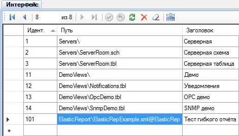

. Чтобы изменения отобразились в веб-приложении Вебстанция, необходимо выполнить выход и повторный вход в веб-приложение. Отчёт будет доступен на странице Главное меню > Отчёты.
. Чтобы изменения отобразились в веб-приложении Вебстанция, необходимо выполнить выход и повторный вход в веб-приложение. Отчёт будет доступен на странице Главное меню > Отчёты.Плагин Гибкий отчёт позволяет генерировать отчёты в соответствии с пользовательской конфигурацией. С помощью данного плагина Вы можете построить практически любой необходимый отчёт. Пользователю достаточно выбрать период и нажать на кнопку генерации отчёта. Администратор предварительно создаёт конфигурации отчёта, которые определяют набор секций различной формы, из которых состоит отчёт, и связывают столбцы и строки отчёта с данными системы.
Сначала необходимо выполнить общую последовательность установки плагина, которая описана по ссылке. А затем выполнить несколько дополнительных действий:
Отчёты состоят из набора секций, которые выводятся в выходной документ одна за другой. Каждая секция имеет свой тип, параметры и привязку к данным. Кроме того, отчёт имеет общие параметры, влияющие на все секции. Один и тот же отчёт может быть сгенерирован в различных форматах. В настоящий момент поддерживаются форматы Excel, PDF и HTML. При этом внешний вид одного и того же отчёта, сгенерированного в разных форматах, может незначительно отличаться.
Файл конфигурации задаёт форматирование отчёта и определяет привязку данных отчёта к входным каналам. Для каждой отчётной формы создаётся отдельный файл конфигурации. Файл конфигурации имеет формат XML. Он должен быть сохранён в директории интерфейса, по умолчанию C:\SCADA\Interface, или в её поддиректории.
В дистрибутиве плагина содержится пример файла конфигурации отчёта SCADA\Interface\ElasticReport\ElasticRepExample.xml. Данный пример включает подробное описание параметров настройки и демонстрирует формирование секций отчёта всех возможных типов.
Редактирование файлов конфигурации может осуществляться в любом текстовом редакторе. Например, для бесплатного редактора Notepad++ существует плагин для удобной работы с файлами XML.
Имеется возможность настроить собственные стили отчётов: шрифты, цвета, размеры ячеек и т.д.
Стили отчёта для выгрузки в формате Excel настраиваются в файле
SCADA\ScadaWeb\plugins\ElasticReport\templates\ElasticRepExcel.xml
Чтобы создать собственные стили, необходимо открыть этот файл в программе Excel и перейти на страницу Custom Styles, на которой разрешается создание дополнительных стилей. В качестве примера рекомендуется использовать стили со страницы Default Styles.
Пользовательские стили отчёта для выгрузки в формате PDF задаются в файле
SCADA\ScadaWeb\plugins\ElasticReport\templates\ElasticRepPdfCustom.xml
Файл XML, описывающий стили для формата PDF, редактируется вручную в любом текстовом редакторе. В качестве примера удобно использовать стили PDF по умолчанию из файла ElasticRepPdfDefault.xml.
Стили отчёта для выгрузки в HTML настраиваются в файле
SCADA\ScadaWeb\plugins\ElasticReport\css\customstyles.css согласно правилам каскадных таблиц стилей.
Чтобы отчёт появился в списке доступных отчётов, его нужно прописать в таблице Интерфейс с помощью программы Администратор. Необходимо указать путь к файлу конфигурации отчёта относительно директории интерфейса, указать тип отчёта ElasticRep и ввести произвольный заголовок (см. рис.).

Затем следует передать базу конфигурации Серверу, щёлкнув по кнопке . Чтобы изменения отобразились в веб-приложении Вебстанция, необходимо выполнить выход и повторный вход в веб-приложение. Отчёт будет доступен на странице Главное меню > Отчёты.